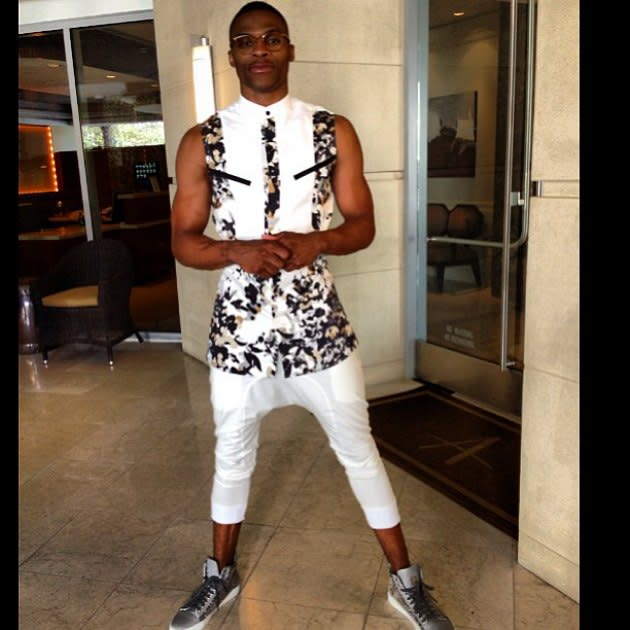
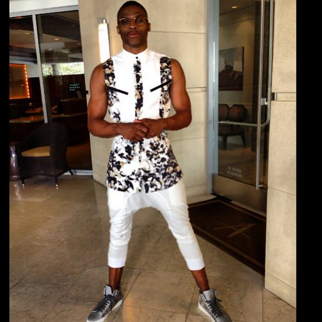

Manchester United Football Club, commonly referred to as Man United (often stylised as Man Utd), or simply United, is a professional football club based in Old Trafford, Greater Manchester, England. The club competes in the Premier League, the top division in the English football league system. Nicknamed the Red Devils, it was founded as Newton Heath LYR Football Club in 1878, but changed its name to Manchester United in 1902. The club moved from Newton Heath to its current stadium, Old Trafford, in 1910.